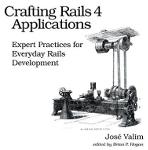

<header>
  
  <h2>¿Cómo mejorar tu dominio de <em>Ruby o Rails</em>?</h2>
  <p>Artículos, eventos, mejores prácticas y patrones</p>
</header>
<section id="definiciones">
  <dl>
    <dt>Mejores prácticas</dt>
    <dd>Mejores prácticas.</dd>
    <dt>Encuentros</dt>
    <dd>Katas, Dojos, desafíos, Concursos.</dd>
    <dt>Libros avanzados</dt>
    <dd>Hay muchos libros que cubren aspectos específicos del desarrollo con <em>Ruby on Rails</em>, pero
      algunos de los más reconocidos que cubren el conjunto de la plataforma son:
      <p>
      <a class="libro" href="http://tr3w.com">
        </a>
      <a class="libro" href="http://pragprog.com/book/jvrails/crafting-rails-applications">
        </a>
    </dd>
    <dt></dt>
    <dd>...</dd>
  </dl>
</section>

